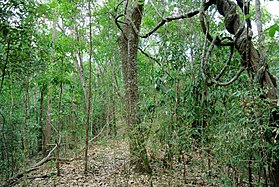

Bosque Seco
El bosque seco, xerófilo, deciduo, también llamado selva seca, tropófila, caducifolia o también hiemisilva, es el ecosistema de semidensa o densa vegetación arbolada, que alterna climas estacionales lluviosos breves con climas secos más prolongados.
Es uno de los catorce biomas con los que el WWF clasifica las ecorregiones terrestres dándole la denominación de Bosque seco tropical y subtropical de hoja ancha.
Los bosques secos de Honduras se encuentran en el sur del país (Valle, Choluteca) y también en otras zonas interiores como Valle de Comayagua, Valle de Otoro, Valle de aguan y el sur del Departamento de Gracias.
